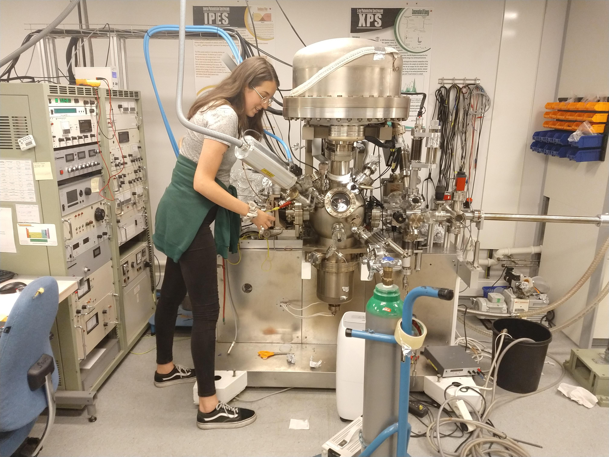

Alenka jobber som forskningsassistent denne sommeren under veileder Justin Wells, som hører til forskningsgruppen QuSpin.
Navn: Alenka Djarmila Behsen
Studie: Nanoteknologi, med spesialisering i bionanoteknologi.
Årskull: Begynner i 5. klasse etter sommeren
Veileder: Justin Wells på QuSpin

Dette er andre sommeren jeg jobber som forskningsassistent på laboratoriet, og årets sommerprosjekt går ut på å fjerne sinkforurensinger i et vakuumsystem. Dette byr på mange utfordringer, og jeg har erfart at ting tar tid på labben! Spesielt når en jobber med vakuumsystem.
Sommerprosjektet byr på veldig mange forskjellig oppgaver. Alt fra dataanalyse av prøver i vakuumsystemet, til mer «hands-on» reparasjon av utstyr, som lodding. Det blir ikke alltid så pent, men det fungerer! I dag skal vi prøve å fikse en litt defekt vakuumpumpe. Litt kan jeg prøve meg på selv, men heldigvis er det flere involverte vitenskapelige ansatte på labben. Så selv om veilederen min er på ferie, er det som regel alltid noen en kan spørre om hjelp.
Jeg lærer noe nytt hver dag, og erfaringene fra sommerprosjektet i fjor samt prosjektet i faget nanoverktøy kommer godt med denne sommeren. Arbeidet på labben er fjernt fra det jeg driver med resten av studiet, men det er veldig fint å få litt bredde, og det kommer trolig godt med senere.